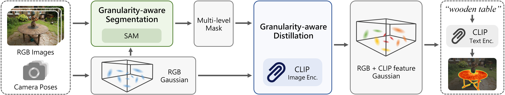
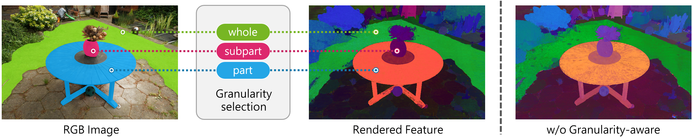

Pipeline
GAGS pipeline. Given a set of images with camera poses, GAGS first uses 3D Gaussian Splatting to reconstruct the scene's geometric representation, then utilizes it for granularity-aware segmentation and CLIP feature distillation. The finally output 3D feature field supports open-vocabulary queries.

Granularity-aware segmentation. For each input image, our method calculates the number of prompt points for each patch, converts the local Gaussian density into a discrete probability distribution to guide prompt point sampling, and further directs SAM to generate multi-view consistent masks.

Granularity-aware distillation. leveraging the inherent consistency of 3D Gaussian splatting, Our method performs granularity-aware feature distillation, enhancing the stability and accuracy of learned object features